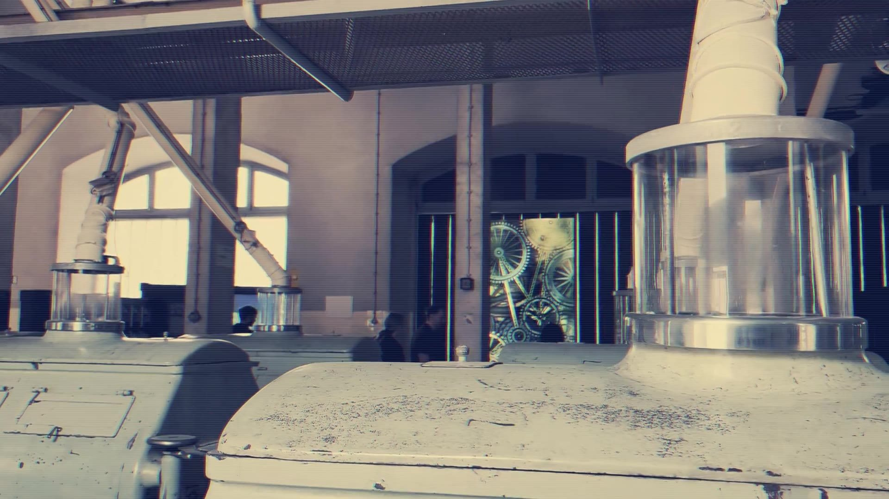
Sixth edition · fifth anniversary
NFC Summit 2027
The Digital Pop Culture Festival
27 — 29 May 2027 · Unicorn Factory, Beato, Lisbon

The future belongs to crossovers.
Five years later, this community has an address.
Art at the service of entertainment.
2027, our fifth anniversary: the festival becomes a fairground.
On The Wall · since September 2026
It has already started.
325 mints in seven weeks
311 names and 14 portraits, hand-painted on the walls of NFC 2027
House 01 already taken by JPEG FRENS
People of the Wall, the podcast: every Friday, 32 episodes so far
The community did not wait for May.
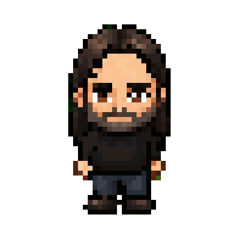
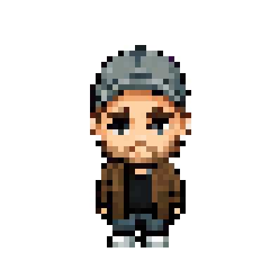
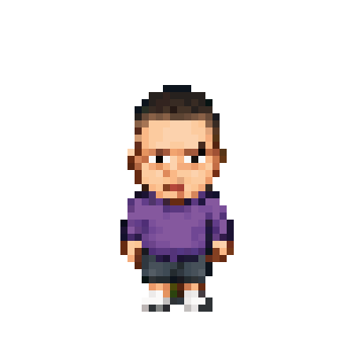
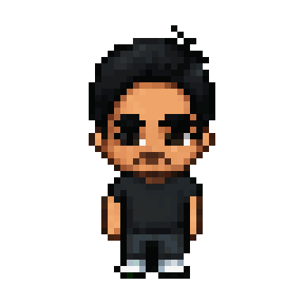
NFC Summit 2027 — General presentation
04
Definition
Digital Pop Culture
Culture is now made where two worlds meet.
Art
×
Finance
Builders
×
Creators
Communities
×
Institutions
Internet
×
Real life
Technology
×
Culture
Collecting
×
Belonging
NFC Summit 2027 — General presentation
05

Sixth edition · fifth anniversary
Five years.
One address.

2026 edition — final report
What one edition holds
2 740
Visitors
150+
Speakers
79
Countries
75
Sponsors
200+
Artists exhibited
30+
Side events
6M+
Organic impressions
Source: NFC Summit 2026 final report
07
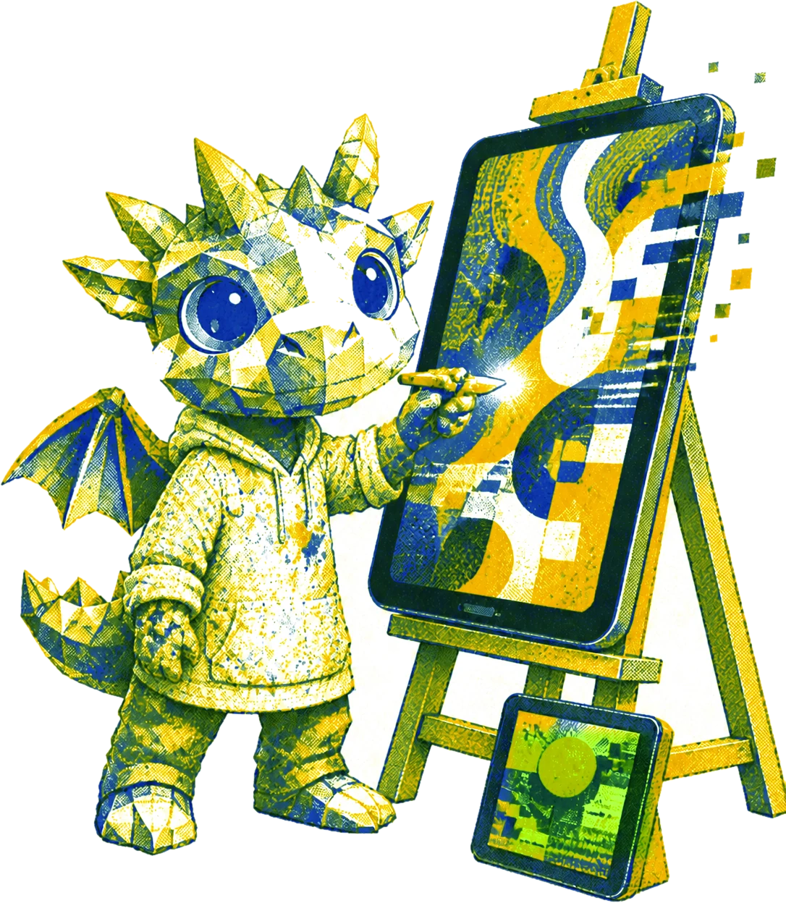


“
Amazing 48 hours at NFC Summit in Lisbon. One of the best 2 days of my life.
Adam Weitsman
Collector · Gold sponsor 2027

Six worlds · 27 — 29 May 2027
Welcome to the fairground.
The programme
Six worlds
01
Art Fun Fair
Art × Play
02
Kawaii Summit
Cards × Art
03
Conference
Ideas × Action
04
Art Factory
Art × Collecting
05
Hackathon · AI Day
Builders × AI
06
Parties
Internet × Real life
NFC Summit 2027 — General presentation
10

World 01 · Art × Play
Play the art.
A fairground where artists build the rides: a screen, a score, a print to take home.
NFC Summit 2027 — General presentation
11
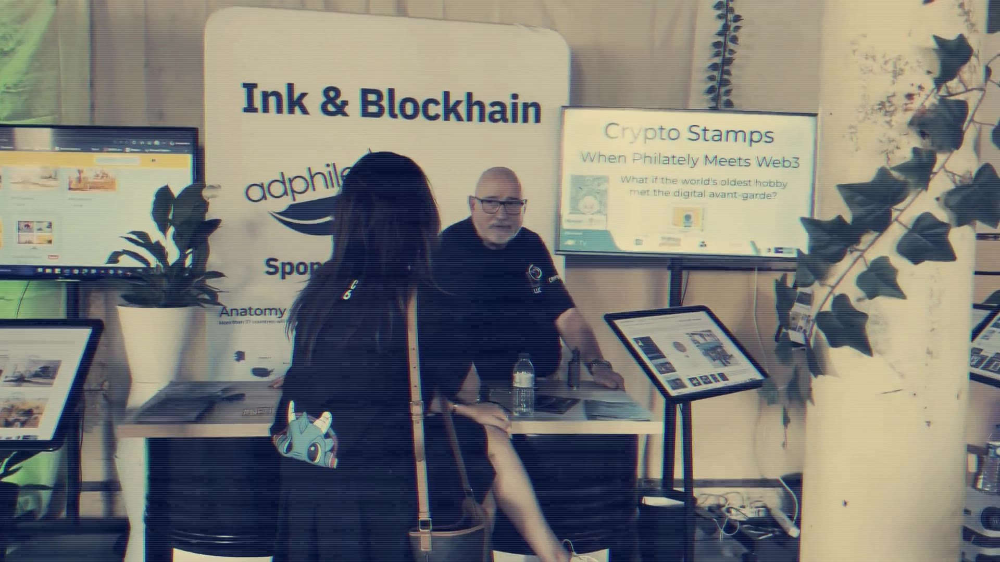
World 02 · Cards × Art
Where cards become art.
Tournaments on the tables, the card as an artwork on the walls.
NFC Summit 2027 — General presentation
12

World 03 · Ideas × Action
One day to think. One day to listen.
Day one, working groups. Day two, the symposium and the big names.
NFC Summit 2027 — General presentation
13

The museum of the summit.
Four floors of a former flour mill, the machines still in place.
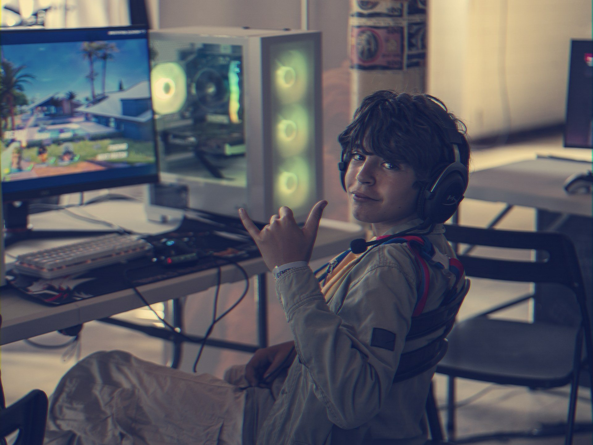
World 05 · Builders × AI
Build it in two days.
In the Escola 42 building, on site, 27 and 28 May. The best projects demo on the main stage.
NFC Summit 2027 — General presentation
15
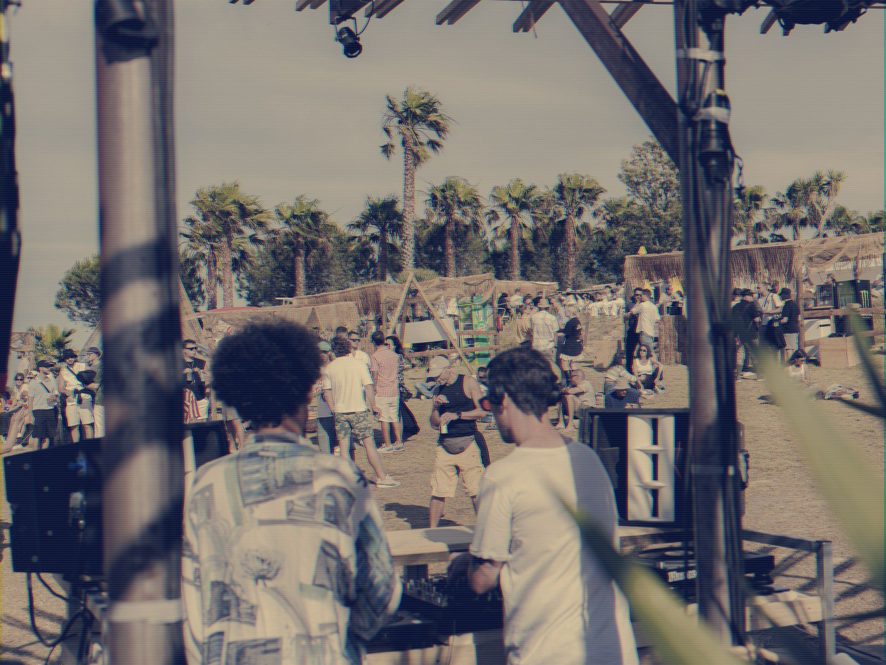
World 06 · Internet × Real life
Every night, everywhere.
A party every evening, and 29 May is the party day.
NFC Summit 2027 — General presentation
16
Every stand is an artistic activation
Play. Win. Keep.
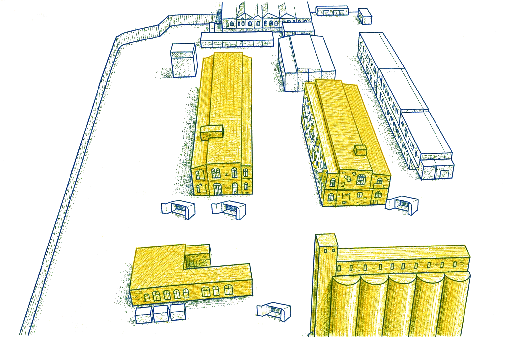
Art Factory
The Wall
Main stage
Kawaii Summit
Art Fun Fair
Side events
Parties
Galleries
The venue
One site, one fairground
Art Fun Fair
The fair, at the heart of the plaza
Art Factory
Four floors of exhibitions
Main stage
Two days of conference
Kawaii Summit
Cards, players, artists
The Wall
The names of the community
Escola 42
Hackathon · AI Day
NFC Summit 2027 — General presentation
18
27 — 29 May 2027
Three days in May
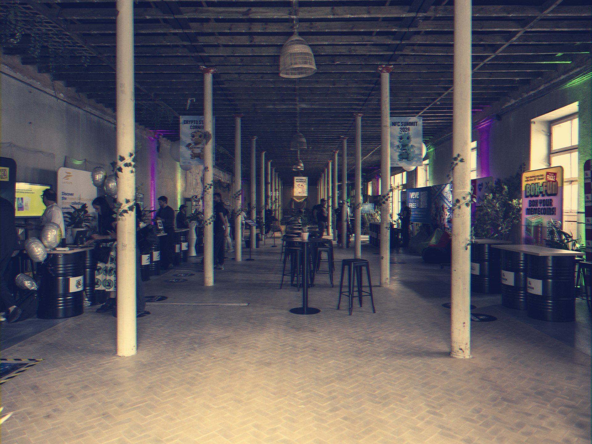
Thursday 27
The working day
— Working groups
— Fair, cards and Art Factory open
— The hackathon starts
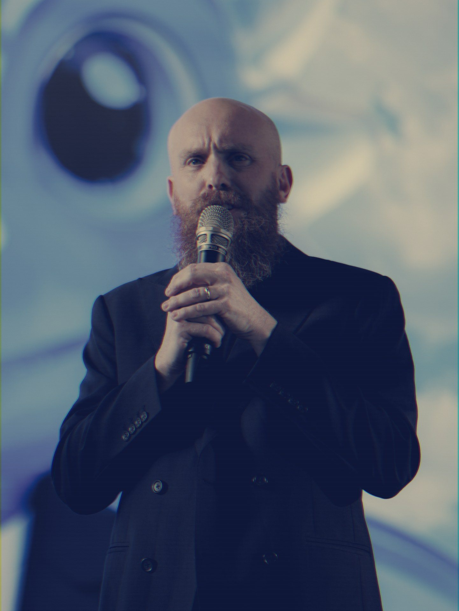
Friday 28
The symposium
— Main stage, big names
— Tournaments and fair all day
— Hackathon demos
Saturday 29
The party day
— No talks, no stage
— A full day of party
— The final party
NFC Summit 2027 — General presentation
19


2027 · our fifth anniversary
Just wait until you see what we’ve built.
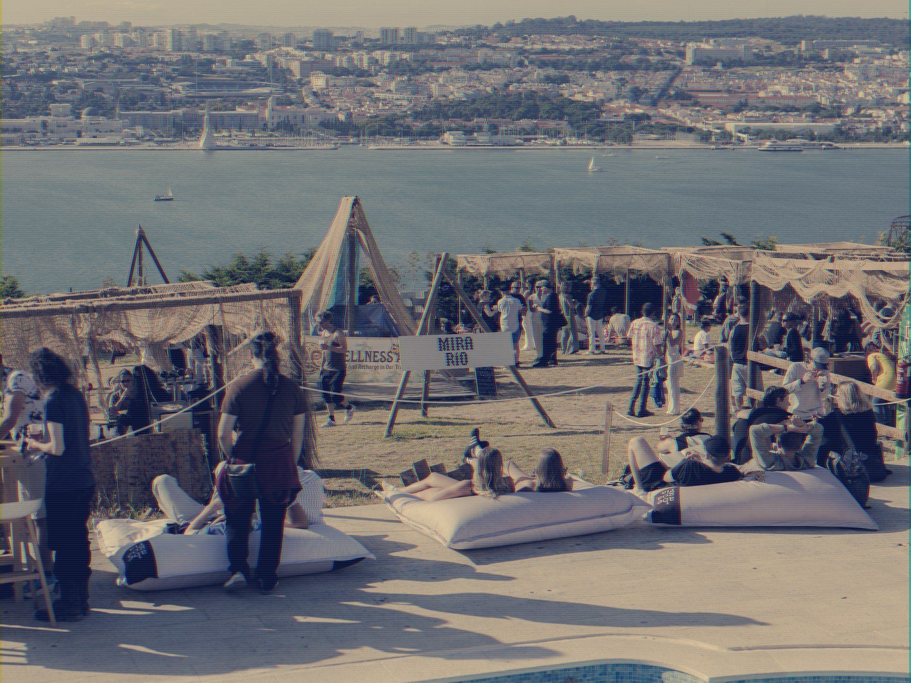
The city was already here
Artists, founders and collectors moved to Lisbon before anyone called it a scene.
NFC Summit 2027 — General presentation
21
Why people come back
Three days people keep
01
You meet the people you only knew online
02
You see ideas before they become trends
03
You leave with something started
NFC Summit 2027 — General presentation
22
27 — 29 May 2027 · Unicorn Factory, Beato, Lisbon
See you in Beato
Gold sponsors 2027 · JPEG-FRENS · Yuga Labs · Adam Weitsman